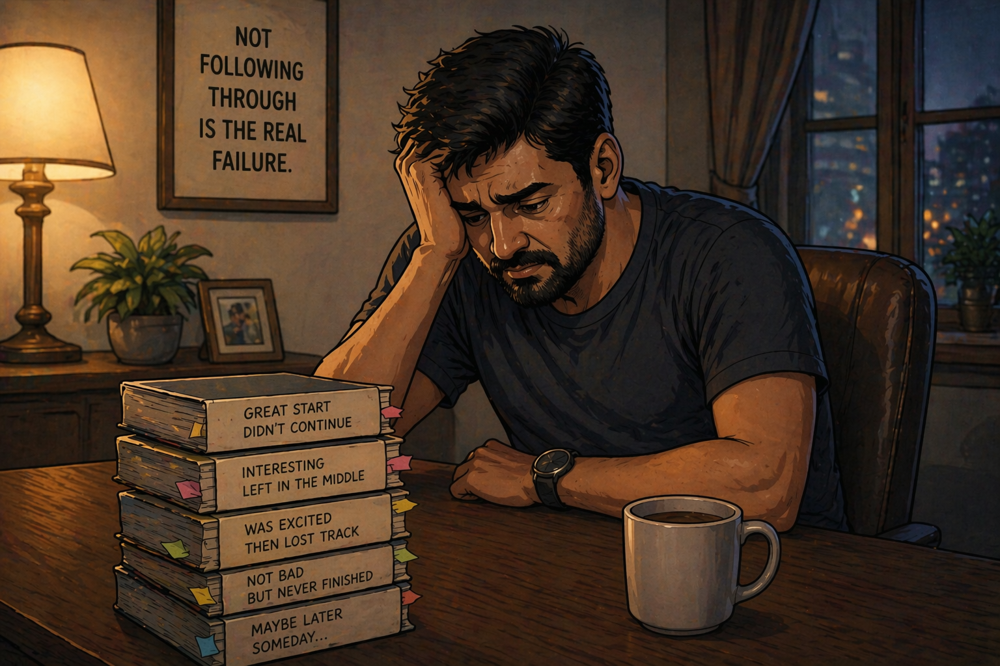

You've spent thousands on books.
Hours reading.
But honestly — has anything actually changed?
Your income. Your thinking.
Your relationships.
Still the same.

Good news — this can be fixed.
, your report shows the problem.
A 5-day live workshop will fix it.
And it's built for you if:
If even one of these hits home —
this workshop is for you.
500+ professionals have already got their first real result from a book.
You can be .